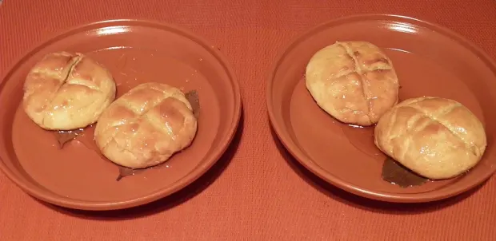

Libum (Ancient Roman Cheesecake), image taken from here.
Description
Libum was a sacrificial cake offered to the household spirits, but the Romans ate it as well!
The following recipe is from the book De Agri Cultura by Cato, who was a consul, statesman, and soldier. I'm sure he got the recipe from his cook.
Ingredients
- 1/2 cup plain all-purpose flour
- 1 cup ricotta cheese
- 1 egg, beaten
- Bay leaves
- 1/2 cup clear honey
Steps
- Sift the flour in a mixing bowl.
- Beat the cheese until soft; stir into the flour.
- Add the beaten egg to the flour/cheese mixture, forming a soft dough.
- Divide the dough into four and shape each piece into a bun.
- Place on a greased baking tray with a fresh bay leaf underneath.
- Heat the oven to 375°F/190°C. Bake for 35 to 40 minutes until golden brown.
- Warm the honey, pour it into a flat plate, and place the buns on it to rest until the honey is absorbed.